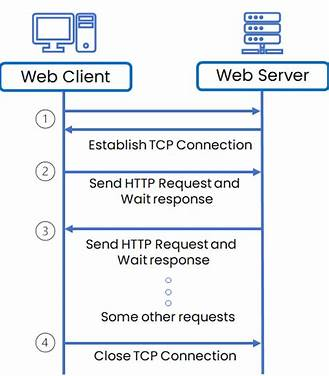

Introduction
In the vast world of the internet, HTTP (HyperText Transfer Protocol) plays a crucial role in enabling communication between clients and servers. Whether you're browsing your favorite website, streaming a video, or shopping online, HTTP is working behind the scenes to make it all possible. In this blog post, we'll dive deep into the workings of HTTP, its key components, and its significance in the digital world.
HTTP is a stateless protocol, meaning each request from a client to a server is independent. The server does not retain any information about previous requests. This simplifies server design but requires mechanisms like cookies, sessions, and tokens to maintain state for user interactions (e.g., shopping carts or login sessions).
What is HTTP?
HTTP stands for HyperText Transfer Protocol. It is a protocol used for transmitting hypertext over the internet. HTTP defines how messages are formatted and transmitted, and how web servers and browsers should respond to various commands. It operates as a request-response protocol in the client-server computing model.
How HTTP Works
HTTP works based on a simple request-response model:
- Client Requests: The client, typically a web browser, sends an HTTP request to the server. This request can be for HTML documents, images, videos, or other web resources.
- Server Responses: The server processes the request and sends back an HTTP response. This response contains the requested resource, status information, and HTTP headers.

Common HTTP Ports
port 80:This is the default port for HTTP traffic. It is used for unencrypted web traffic and is the standard port for web browsers to access websites
port 433:This port is used for HTTPS (HTTP Secure) traffic, which is HTTP over SSL/TLS. It ensures that the data transmitted between the client and server is encrypted and secure
Key Components of HTTP
URL (Uniform Resource Locator): The address used to identify a resource on the web. Example: https://www.example.com/index.html
HTTP Methods: HTTP defines several methods indicating the desired action to be performed on the identified resource. Some common methods are:
- GET: Requests data from a specified resource.
- POST: Submits data to be processed to a specified resource.
- PUT: Updates a current resource with new data.
- DELETE: Deletes a specified resource.
HTTP Headers
These are key-value pairs sent in both HTTP requests and responses. They provide essential information such as content type, user-agent, and authorization.
HTTP Status Codes
These are codes returned by the server indicating the status of the request. Some common status codes are:
- 200 OK: The request was successful.
- 404 Not Found: The requested resource could not be found.
- 500 Internal Server Error: The server encountered an error.
HTTP Versions
HTTP/1.1: The most widely used version of HTTP. It introduced features like persistent connections, chunked transfer encoding, and additional cache control mechanisms.
HTTP/2: The latest version, designed to improve performance. It introduces features such as multiplexing, header compression, and server push, making web communications faster and more efficient.
HTTP/3: Uses QUIC protocol for faster and more secure communication.
Security
HTTPS (HyperText Transfer Protocol Secure): This is a secure version of HTTP, which uses SSL/TLS to encrypt the data transmitted between the client and the server, ensuring data integrity and privacy.
Persistent vs. Non-Persistent Connections
Non-Persistent HTTP: Each request/response pair opens a new TCP connection, which is closed after the transaction.
Persistent HTTP (introduced in HTTP/1.1): Keeps the connection open for multiple requests and responses, reducing latency.
Example of an HTTP Request and Response
HTTP Request:
GET /index.html HTTP/1.1
Host: www.example.com
HTTP Response:
HTTP/1.1 200 OK
Content-Type: text/html
<html>
<body>
<h1>Welcome to Example.com!</h1>
</body>
</html>
Conclusion
HTTP is the backbone of data communication on the web, enabling seamless interaction between clients and servers. Its simplicity, flexibility, and extensibility have made it the protocol of choice for web applications. Understanding HTTP is essential for anyone involved in web development or interested in how the internet works.